SEO
14+ years and counting. Still hands-on, still adapting as search shifts from Google links to AI-generated answers.
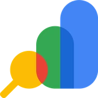
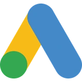
SEO Professional with 14+ years of hands-on experience in Search, now combining core SEO with AEO, AI Media, and Prompt Engineering.
I'm an SEO professional with 14 years of experience, and still counting.
Today I work at Insight Direct Philippines LLC, part of Insight Enterprises, a Fortune 500 company. I'm one of many on a large SEO team, mainly doing keyword research and technical SEO, plus whatever else comes up.
SEO is my day job. I also take on AI media and video editing work on the side. See Skillset for the details.
PCM, MacMall, and TigerDirect were later acquired by Insight.
Three skillsets I use daily, click into each one to see the work.
14+ years and counting. Still hands-on, still adapting as search shifts from Google links to AI-generated answers.


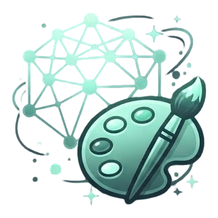
I generate images with AI tools, built for real projects, not just testing what's possible.
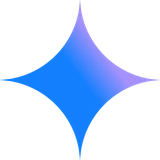
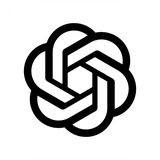
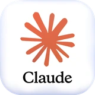
Raw footage to finished cut, edited for social media and the web.
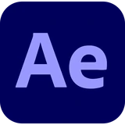
SEO isn't one skill, it's three working together: what's on the page, what points to the page, and what makes it technically sound. I've also started applying this thinking to AEO, as search engines move from ranking pages to generating answers.
Still new ground for everyone, here's what I've worked on so far:
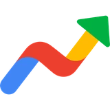
Google Trends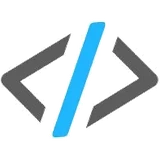
Sitebulb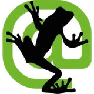
Screaming Frog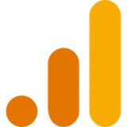
Google Analytics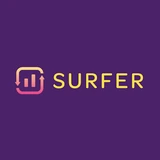
SurferSEO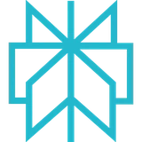
PerplexityAudited and resolved every error flagged Critical or High under Sitebulb for Insight's APAC region, covering Australia, New Zealand, Singapore, Hong Kong, and China. Solo.
At PCM LLC, before the Insight acquisition, I handled SEO, internal site search, and assisted with SEM, all at the same time, for the entire company.
At PCM LLC, I handled SEO optimization and supported the SEM side, keyword research and ad copy, for the company's Black Friday and Cyber Monday campaign pages.
Implemented llms.txt for the company site before it was widely recognized as a factor in AI search.
Created three AI agents to handle repetitive SEO work, keyword research and intent mapping, content gap analysis, and competitor analysis, cutting manual hours out of the process.
Keep exploring
AI media isn't about typing a prompt and hoping for the best. It's about giving a machine precise, technical instructions until it produces exactly what you pictured. I treat it the same way I treat SEO, as a skill you sharpen through repetition, not luck.
I started following AI when transformers came out, and it was obvious it would change how work and entertainment get done. I took every course I could find.
When image creation tools became usable, I went all in. I knew it would help with SEO, marketing, and sales. I built two YouTube channels just to practice. One channel makes animated inspirational quotes and short stories. The other creates hyperreal anime character introductions, which is a much tougher technical challenge. Keeping a character looking consistent across different videos, getting realistic details, and refining instructions until the output matches my exact vision takes a lot of work.
The real goal is not just making cool pictures. It is building sharp instructions that plug directly into real SEO, marketing, and sales projects.
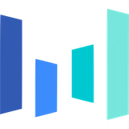
SeedreamTools for high-resolution visual creation, detailed scene rendering, and prompt-controlled concepts.
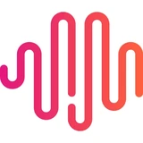
MiniMax H3Tools for motion generation, dynamic camera angles, and consistent visual scenes.
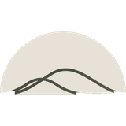
Stable AudioTools for voice generation, background audio, and custom sound tracks.
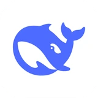
DeepSeekTools for research, prompt engineering, vibe coding, and AI agents.
Technical Objective: Generate an impressionistic oil painting style featuring impasto brushwork, natural lighting, and detailed floral and aquatic environments.
Workflow: Text Prompt Engineering → Impasto Style Mapping → High-Fidelity Render
Tool Stack: Flux Pro
Technical Objective: Convert 2D anime art into photorealistic assets while keeping original character traits, pose, and composition intact.
Workflow: 2D Base Generation → Img2Img Feature Lock → Photo Texture Enhancement
Tool Stack: GPT-img (ChatGPT Image Generation)
Technical Objective: Convert realistic photo assets into 3D animated character renders while preserving subject expression, lighting, and environmental layout.
Workflow: Photo Base Generation → Img2Img Style Transfer → 3D Render & Feature Preservation
Tool Stack: Photon (Realistic Image) → GPT-img (3D Animation Conversion)
Technical Objective: Transform a minimal product bottle render into an action-driven promotional poster, locking product label details while adding dynamic environment elements and typography.
Workflow: Studio Product Base → Img2Img Scene Expansion & Effects → Typography Integration
Tool Stack: Photon (Studio Shot Base) → GPT-img (Ad Poster Generation)
Technical Objective: Convert complex search marketing concepts into a highly detailed, isometric visual diagram with structured spatial zones and embedded text annotations.
Workflow: Structured Data/Outline → Isometric Spatial Mapping → Multi-Zone Diagram Render
Tool Stack: Notebook LLM.
Technical Objective: Render hand-drawn technical blueprint sketches into photorealistic studio product concepts, preserving frame geometry, component layout, and structural proportions.
Workflow: Technical Sketch Base → Material & Lighting Synthesis → Photorealistic Render
Tool Stack: Gemini
Technical Objective: Generate high-speed automotive photography featuring realistic environmental motion blur, wet road reflections, and accurate high-performance vehicle detailing.
Workflow: Prompt Engineering → Shutter Speed Simulation → Environment & Vehicle Render
Tool Stack: Photon
Technical Objective: Generate a multi-angle character reference sheet featuring consistent facial expressions, proportions, and costume details across multiple grid panels.
Workflow: Concept Prompting → Multi-Angle Pose Mapping → Grid Sheet Synthesis
Tool Stack: Gemini
Technical Objective: Generate an intricate, dream-like tableau featuring a clear narrative flow (deconstructed tree to floating island to mythical arch) contained within a central glass cube, all under a fantastical sky.
Workflow: Conceptual Ideation → Narrative Flow Integration → Atmospheric Lighting Synthesis
Tool Stack: Gemini
Technical Objective: Create a grand-scale, cinematic landscape featuring an extensive mountaintop castle connected by bridges, rendered in a detailed, atmospheric style suitable for production backgrounds.
Workflow: Landscape Prompting → Architectural Scaling → Atmosphere & Lighting Render
Tool Stack: Gemini
Technical Objective: Repair severe physical damage, fading, creases, and tears in vintage archival family portraits while preserving authentic period features and facial structures.
Workflow: Historical Photo Analysis → Damage Inpainting & Defect Removal → High-Fidelity Detail Synthesis
Tool Stack: Gemini (Damage Assessment & Base Generation) → Flux Pro (Restoration & Detail Refinement)
Technical Objective: Convert a flat 2D vector cartoon character into a polished 3D vinyl-styled figurine render with glossy surface shaders, depth, and realistic studio lighting.
Workflow: 2D Character Base → 3D Depth & Texture Mapping → Stylized CGI Studio Render
Tool Stack: Gemini
Video editing isn't about slapping clips together on a timeline and hoping the cut works. It's about pacing, rhythm, and forcing raw footage to tell a clear, intentional story. I treat it the same way I treat SEO, as a technical discipline built on structure and optimization, not trial and error.
When AI video tools arrived, I saw them as a way to speed up production, not replace editing fundamentals.
I use editing to turn concepts from my YouTube channels (Below60Facts and InspireByteTV) into polished visual pieces. The goal is always tight, high-retention cuts that support real marketing and content workflows.
From the initial idea to the visuals, video creation, voiceovers, sound, and the final cut, I handle every step myself with AI helping along the way.
Fast, agile editing and automated captioning for rapid content turnaround and social distribution.
Heavy-duty, precision timeline control for professional multi-track arrangement, color grading, and audio sweetening.
AI-powered video generation and styling workflows for rapid visual asset creation.
Advanced AI video enhancement and generation workflows for modern multimedia production.
New videos are being added. Check back soon.
Professional, direct, and open for collaboration. Drop a message to discuss your next project or SEO strategy.
Fast responses for inquiries regarding SEO systems, technical audits, and GenAI media production pipelines.